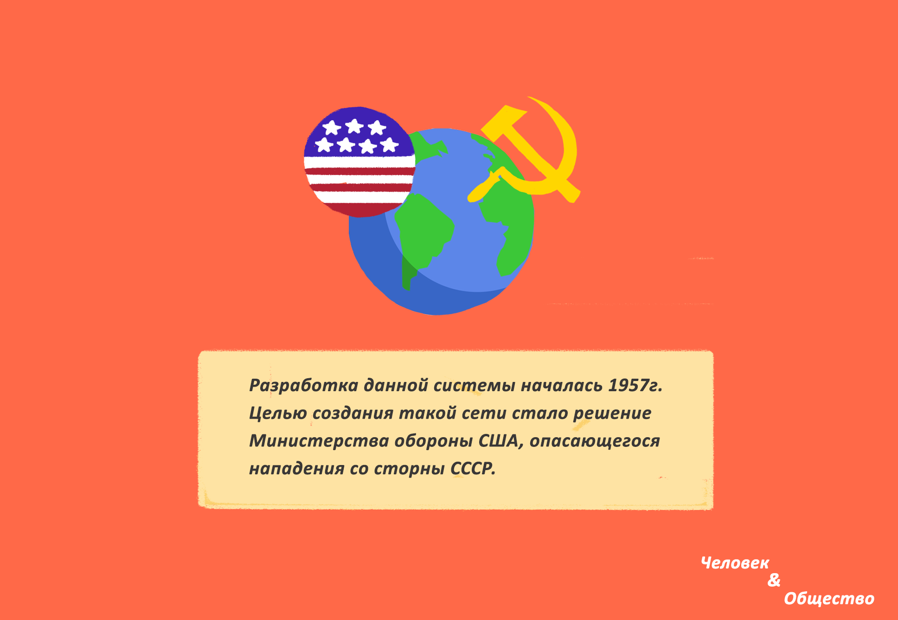

Это — и есть интернет, всемирная сеть, в которой каждый компьютер подчиняется определенному набору правил обмена информацией. Помогают всему этому работать специальные мощные компьютеры со своими специальными задачами — серверы.
По этим самым правилам обмена информацией каждому компьютеру и серверу, который подключен к сети интернет, присваивается свой виртуальный адрес (IP-адрес «айпи-адрес»), состоящий из четырех чисел, которые пишутся через точку (например, 192.128.10.70, все числа от 0 до 255). И вся информация передается маленькими кусочками — пакетами. Кроме самого кусочка информации, которую Вы собираетесь получить или передать, в этом пакете обязательно указывается IP-адрес Вашего компьютера и IP-адрес компьютера получателя.
Коротко об истории интернета
К созданию Интернета человечество шло долгие годы. Были изобретены множество видов средств связи, такие как изобретение телеграфа 1836 г. и изобретение телефона в 1876 г. Давайте разберемся, как и для чего придумали Интернет.

США и СССР соперничали между собой во всем. Запуск первого спутника, осуществленный СССР в 1957 году, не понравилось США, в результате чего президент США издал указ о создании Агентства перспективных исследовательских проектов (ARPA), в котором были собраны наиболее яркие ученые США.
Первым этапом развития было использование интернета для чтения информации онлайн.
Причиной тому была низкая скорость и другие технические ограничения интернета - было довольно сложно им пользоваться без знания специального языка форматирования Интернет-страниц. Это было не только сложно, но и отнимало много времени. Сейчас мы находимся на следующем этапе развития Интернета, его называют Web 2.0. Сейчас стало возможно пользователям загружать собственную информацию (истории, комментарии, фотографии, видео) лишь только нажав на клавишу.
Теперь мы не только читаем информацию в интернете, но и сами создаем и распространяем ее. Тот, кто использует интернет, чтобы загрузить информацию, например, выставив фотографию в Facebook или создавая блог, использует возможности Web 2.0, то есть таким образом новый этап разрушил границы между потребителями и создателями контента.
Возникает вопрос о том, кто же владеет Интернетом в настоящее время. Нет официального владельца интернета или того, кто бы его контролировал, что означает, что отдельные лица и организации являются сами ответственными за то, что они распространяют онлайн. С одной стороны, это означает, что интернет поддерживает свободу слова, а с другой стороны, он не может защитить пользователей.
Информационное общество
Современный человек живет, взаимодействуя с «морем информации». Он получает определенную информацию с помощью органов чувств, хранит в памяти и с помощью мышления анализирует ее.
И обменивается с другими людьми информацией. Сейчас ученые говорят о том, что человечество вступило в «информационную эру», которая представляет собой эру компьютеров или электронную эпоху.
Понятие «информационное общество» зародилось в 1940-х гг. с появлением кибернетики, хотя сам термин стал использоваться позже, когда началась повсеместная компьютеризация и стали активно развиваться информационные и цифровые технологии.
Хотя не существует одного человека или организации, которая контролирует весь интернет, есть все же несколько организаций, которых можно назвать влиятельными в мире интернета. Это такие компании, как Microsoft, Apple, Facebook и Google. Каждая из них имеет собственные задачи и мотивы (например, заработать деньги, собирать данные о пользователях и т.д.).
Подведем итоги темы:
- Интернет представляет собой хранилище, в котором содержится огромное количество различной информации. Однако характер и качество этой информации может быть очень разным.
- В Интернете есть много интересной и полезной информации, которая может помочь в учебе и работе, а также поднять настроение. Наряду с этим, в Интернете может содержаться немало вредной, опасной или бесполезной информации.
- Цифровые устройства в жизни современного человека приобретают большое значение, дают новые возможности для получения информации, общения, учебы, развлечения.
- Интернет-технологии изменяют образ жизни современного человека, влияют на его поведение, привычки, круг интересов.
В классе и дома
Давайте проведем небольшое исследование. Ответьте на вопросы:
- Есть ли у тебя компьютер?
- Есть ли у тебя доступ к сети Интернет?
- Сколько времени ты проводишь в сети Интернет?
- Как ты считаешь – опасен Интернет или нет?
- Чем ты обычно занимаешься в Интернете?
- Получаешь ли удовольствие от работы в Интернете?
- Встречал ли ты когда-нибудь угрозы, противоправные призывы в сети Интернет?
- Как родители относятся к твоей работе в сети Интернет?